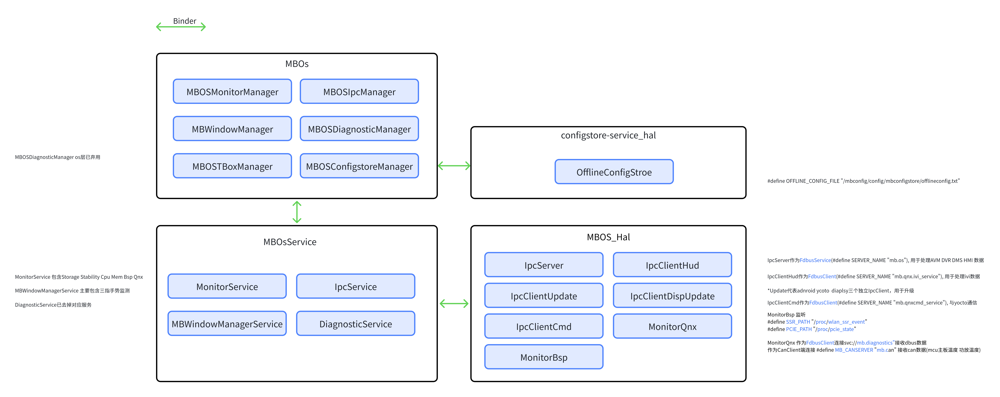

18 盟博 OS 架构与服务边界
证据：用户于 2026-09-20 提供的盟博 OS 架构图（MBOS-20260920）。图未提供代码版本或明确 SoC 标签；本章属于项目补充视图，不自动归属 MT8676 或 MT8668 的所有版本。
图表进入可见区域后生成。 逐项依据用户 MBOS 原图。原图只连容器，未画 Manager 到 Service 的逐项配对，因此不新增一对一调用箭头。退役项保留作原图对照并明确标记，不能当作当前必经链路。Update 注释对应 Android、Yocto、display 三个独立 IpcClient，图中框数与注释差异保留，不补造名称。 展开 / 收起图表
查看 Mermaid 源码
flowchart TB
subgraph managers["MBOs"]
monm["MBOSMonitorManager"]
ipcm["MBOSIpcManager"]
winm["MBWindowManager"]
diagm["MBOSDiagnosticManager<br/>OS 层已弃用"]
tboxm["MBOSTBoxManager"]
confm["MBOSConfigstoreManager"]
end
subgraph service["MBOsService"]
monitor["MonitorService<br/>Storage / Stability / CPU / Mem / BSP / Qnx"]
ipc["IpcService"]
window["MBWindowManagerService<br/>手势监测"]
diag["DiagnosticService<br/>已去掉对应服务"]
end
subgraph config["configstore-service_hal"]
offline["OfflineConfigStroe<br/>/mbconfig/config/mbconfigstore/offlineconfig.txt"]
end
subgraph hal["MBOS_Hal"]
server["IpcServer<br/>FDBus Service：mb.os<br/>AVM / DVR / DMS / HMI 数据"]
hud["IpcClientHud<br/>FDBus Client：mb.qnx.ivi_service<br/>IVI 数据"]
update["IpcClientUpdate"]
disp["IpcClientDispUpdate"]
cmd["IpcClientCmd<br/>FDBus Client：mb.qnxcmd_service<br/>与 Yocto 通信"]
qnx["MonitorQnx<br/>FDBus：svc://mb.diagnostics<br/>CanClient：mb.can"]
bsp["MonitorBsp<br/>/proc/wlan_ssr_event<br/>/proc/pcie_state"]
end
managers <-->|Binder：容器级关系| service
managers <-->|Binder：容器级关系| config
service <-->|Binder：容器级关系| hal
classDef retired fill:#f6f6f6,stroke:#777,stroke-dasharray:5 5,color:#444
class diagm,diag retired查看源文件原图作对照
18.1 这张图补充了什么
原三张总图解释整机部署、Android 分层和跨域通信；新增图把 MBOs、MBOsService、MBOS_Hal 与 configstore-service_hal 展开。它证明框内组件、显式 Binder 连线及右侧注释，不证明每个方框都是一个进程，也不证明类名含 Qnx 就运行 QNX。
原图绿色双向箭头的图例是 Binder，连接的是容器边界；框内具体 Manager 与 Service 的一一绑定仍需 AIDL/源码。右侧 FDBus 端点说明的是 HAL 内部客户端/服务端的通信角色，不能把绿色 Binder 箭头改写成跨 VM Binder 直通。
18.2 模块字典与当前状态
| 层/容器 | 图中模块 | 图中能确认的职责或状态 | 仍需版本证据的部分 |
|---|---|---|---|
| MBOs | MBOSMonitorManager | 监控管理入口名称 | API、调用权限、采样及上报策略 |
| MBOs | MBOSIpcManager | IPC 管理入口名称 | 消息 ID、线程/队列、超时重试 |
| MBOs | MBWindowManager | 窗口管理入口名称 | 与 Android WMS 的调用关系 |
| MBOs | MBOSTBoxManager | TBox 管理入口名称 | 与 UMDP、Telephony、TBox Service 的绑定 |
| MBOs | MBOSConfigstoreManager | 配置管理入口；MBOs 与 configstore 容器有 Binder 连线 | 文件读取、缓存失效、更新权限和失败回退 |
| MBOs | MBOSDiagnosticManager | 注释写“os层已弃用” | 被何接口替代、兼容壳是否保留 |
| MBOsService | MonitorService | 含 Storage、Stability、Cpu、Mem、Bsp、Qnx 监控 | 采样周期、阈值、上报和恢复策略 |
| MBOsService | IpcService | IPC 服务名称 | 进程布局、AIDL 与 HAL 绑定 |
| MBOsService | MBWindowManagerService | 注释写“主要包含三指手势监测” | 不据此认定其负责所有系统窗口管理 |
| MBOsService | DiagnosticService | 注释写“已去掉对应服务” | 不再按本图把它画成在用诊断必经节点 |
| configstore-service_hal | OfflineConfigStroe | 原图拼写；读取离线配置的相关节点 | 类名应否纠正、解析格式、schema、热更新 |
| MBOS_Hal | IpcServer / 多个 IpcClient / MonitorQnx / MonitorBsp | 见下表 | 实际进程名、运行系统和各端点所有者 |
OfflineConfigStroe 保留原图拼写以便检索；正文可解释为 OfflineConfigStore，但不能未经源码确认直接“修正”接口名。MBOSDiagnosticManager/DiagnosticService 的退役也不等于整机取消诊断；MonitorQnx 仍列出 mb.diagnostics 连接。
18.3 HAL 端点与配置核对表
| 组件 | 原图端点/路径 | 原图说明 | 使用边界 |
|---|---|---|---|
| IpcServer | mb.os |
FdbusService，处理 AVM、DVR、DMS、HMI 数据 | “数据”未说明为原始像素，不能据此画整帧视频经 FDBus 复制 |
| IpcClientHud | mb.qnx.ivi_service |
FdbusClient，处理 IVI 数据 | qnx 是名称组成，实际部署域需查注册/启动配置 |
| IpcClientCmd | mb.qnxcmd_service |
FdbusClient，与 Yocto 通信 | 命令种类、权限、超时、幂等性未给出 |
| IpcClientUpdate / IpcClientDispUpdate | 注释说 android、yocto、display 三个独立 IpcClient | 用于升级 | 框图只显式画出两个 Update 名称；第三个精确类名和三者映射待确认 |
| MonitorQnx | sv[本地资料库路径] |
作为 FdbusClient 接收注释所称“dbus数据” | 此处措辞不能证明 FDBus 等同 D-Bus，载荷协议仍待 IDL |
| MonitorQnx / CanClient | mb.can |
接收 CAN 数据，如 MCU 主板温度、功放温度 | 信号缩放、单位、采样新鲜度与 DBC 待确认 |
| MonitorBsp | /proc/wlan_ssr_event |
SSR_PATH 监听入口 | 节点语义、消费方式和异常恢复不能由路径推断 |
| MonitorBsp | /proc/pcie_state |
PCIE_PATH 监听入口 | PCIe link 状态与业务恢复分开验收 |
| OfflineConfigStroe | /mbconfig/config/mbconfigstore/offlineconfig.txt |
OFFLINE_CONFIG_FILE | 图示路径，不保证所有量产版本存在 |
18.4 建议的职责视图
展开 / 收起图表
图表进入可见区域后生成。
查看 Mermaid 源码
flowchart TB
M["MBOs：Manager API 集合"] <-->|"Binder（原图容器级连线）"| S["MBOsService：Monitor / IPC / 手势监测"]
M <-->|"Binder"| C["configstore-service_hal / OfflineConfigStroe"]
S <-->|"Binder"| H["MBOS_Hal"]
H --- F["FDBus 角色：mb.os / ivi / cmd / diagnostics"]
H --- B["MonitorBsp：WLAN SSR / PCIe 节点"]
H --- N["CanClient：mb.can"]图中无向线仅归纳 HAL 的能力集合；不增加原图未证明的调用顺序。已退役诊断节点不纳入在用主链。
18.5 四条排障链
| 现象 | 建议先收集的证据 | 下一步判断 | 避免的误判 |
|---|---|---|---|
| Manager 调用无返回 | 调用方线程栈、Binder transaction、Service 存活及 HAL 返回 | 卡在 Binder 等待、HAL 服务未 ready，还是 FDBus 请求未完成 | 把所有 IPC 问题都归给跨 VM 网络 |
| AVM/DVR/DMS 状态不刷新 | mb.os 注册、订阅/重连、消息序号、业务时间戳 | 控制/状态消息是否新鲜，实际图像链是否独立异常 | 服务在线就认定画面已恢复 |
| 温度监控冻结 | mb.can 数据时间、信号原值、MonitorQnx 消费/缓存 | 上游未更新还是消费者持旧状态 | 数值“正常”就忽略过期 |
| 配置不生效 | 文件版本/哈希、解析日志、Manager 缓存、使用方快照 | 读取失败、schema 不符还是缓存未失效 | 文件已写入就认定所有进程已应用 |
这些是由图归纳的取证方法，具体日志 Tag、采样周期、恢复动作尚未获源码证实。
18.6 需要补齐的五份工件
- 当前分支 AIDL/IDL、接口版本与访问权限表。
- init/systemd 清单、进程树和 FDBus 注册快照。
- Manager→Service→HAL→远端的调用映射及线程模型。
- 升级三个客户端的精确名称、目标域、状态机和回滚关系。
- 退役接口替代关系，以及离线配置 schema/更新生效流程。
本版已经将“图中确认”提升为可引用的结构事实；以上工件未齐全前，不把结构事实扩展成量产时序、恢复责任或精确超时。